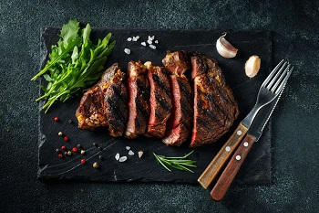

Stek z antrykotu to idealny pomysł na naprawdę pyszne danie, które w dodatku można zrobić w niezwykle szybki sposób. Tak przygotowane mięso jest delikatne.
Na patelni rozgrzej oliwę i podsmaż na niej mięso przez 3 minuty.
Dodaj na patelnię masło, sól, pieprz i tymianek.
Smaż kolejne 3 - 4 minuty.